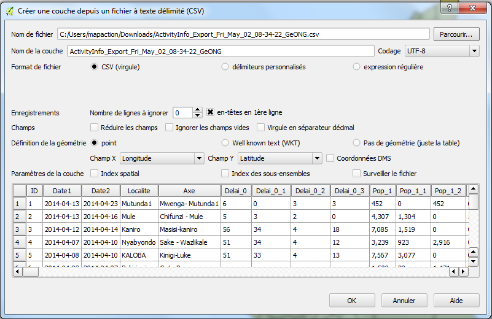
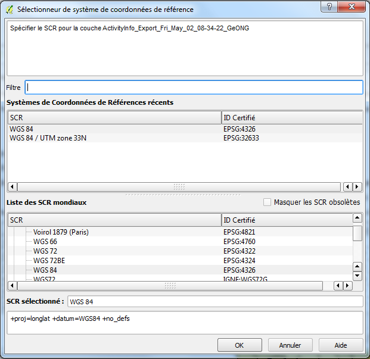
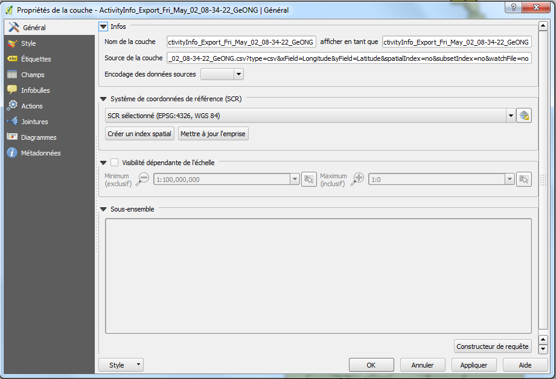

Exercice 1: Chargement des données dans QGIS
QGIS va charger (et sauvegarder) toutes sortes de données spatiales. Cependant, nos points de départs sont des données de feuilles de calculs avec des coordonnées, nous allons donc commencer par charger des données depuis un tableur. Supposons que vous avez reçu des données d’analyse de la vulnérabilité et que vous avez besoin de les charger pour les analyser.
Remarque : Vous pouvez utiliser les boutons situés en bas à gauche de l’écran pour ajouter diverses sortes de calques de données.
QGIS ne fonctionne pas très bien directement avec Excel ou d’autres fichiers de tableur mais vous pouvez charger un fichier CSV. Donc si vous travaillez avec un tableur, sauvegardez d’abord au format CSV.
Chargement des données
- Téléchargez les données sources depuis l’URL suivante : https://antonys.github.io/downloads/ActivityInfo_Export_Fri_May_02_08-34-22_GeONG.csv. Ce fichier contient des données d’analyse de la vulnérabilité utilisées par l’UNICEF en République Démocratique du Congo.
- En maintenant QGIS ouvert, allez dans
Couche > Ajouter une couche > Ajouter une couche de texte délimité et sélectionnez les données.
Remarque: Charger les données d’un tableur peut être fait de différentes façons dans QGIS. Tout comme la méthode décrite ici, vous pouvez aussi utiliser Ajouter une couche de vecteur et effectuer une recherche dans le fichier Excel (bien que tous les champs seront importés sous forme de chaînes) ou essayez avec le extension « XY tools ».
- Vous verrez un écran comme celui-ci :
- 
- A ce stage vous pouvez laisser tous les paramètres par défaut en place et cliquez sur
OK.
Remarque : Vous allez recevoir un message disant qu’il y a des erreurs dans le fichier – parce que les enregistrements dans le fichier CSV ne sont pas coordonnés – cliquez simplement sur Fermer et continuez.
- La prochaine fenêtre vous demandera de confirmer de quel système de référence des coordonnées vient votre donnée et comme elle contient des données latitudes et longitude, choisissez
WGS84 
- Vous venez de créer votre première(?) cartographie ! Même si c’est très simple à cette étape vous allez vous entrainer avec les exercices suivants.
Regarder les données
Nous allons désormais regarder plus en détails les données.
- Double-cliquez sur le nom de la couche dans la table des matières située à droite.
- Cet écran va apparaître :  Utilisez le pour voir les propriétés des données, dont sa mise en forme.
- Cliquez sur chaque option à gauche pour voir celles qui sont disponibles.
- Quand vous cliquez sur le bouton
Champs, vous verrez une liste des colonnes importées depuis le CSV.
- Regardez chaque champ – il se peut qu’il y ait quelques problèmes pour certains, comme par exemple la colonne
Pop_1 qui apparait comme du texte et non comme un champ numérique.
- En effet, QGIS devine le type de données qui devrait être utilisé pour chaque champ après l’importation – dans ce cas, comme la donnée contient une virgule “,”, il l’interprète (à tort) comme du texte.
- Cela ne devrait pas être un problème si vous souhaitez simplement afficher les données – cependant cela vous empêchera d’utiliser les données pour des calculs ou pour une mise en forme.
- Pour parer à ce problème, ouvrez la donnée dans un tableur et changez le format de
Pop_1 pour supprimer les virgules.
- Une fois que c’est fait, rechargez les données et regardez de nouveau les champs – ceux que vous venez de changer devraient désormais apparaître correctement.
Remarque : Si vous voulez un contrôle complet sur les types de données (c’est à dire des chaînes, dates, …) utilisées par QGIS lors de l’importation à partir d’un fichier CSV, utilisez un fichier CSVT pour les définir explicitement.